Logos
Below are logos that I created for performances, personal projects, and class assignments. Each logo is accompanied by an explanatory caption. Several logos have multiple different versions, as demanded by their usages. When present, the alternate forms are included and marked as such.
Click or tap on the set of dots below to select which logo you would like to see first. Then, navigate through the slideshow using the dots or side arrows.
1 / 15
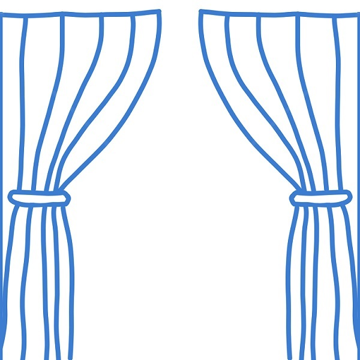
As you may recognize, this is the theatre portion of my four-panel website logo. It also servers as the logo for the theatre portion of my website. Intended to be viewed at an icon size, I designed it larger so that the waves and quirks in the curtains would be smoothed out through size reduction. It was created using Photoshop's line and paintbrush tools. This version of the logo was created in July 2020 as part of my capstone for the Web Design for Everybody course series, during which I created the original version of this website.
2 / 15
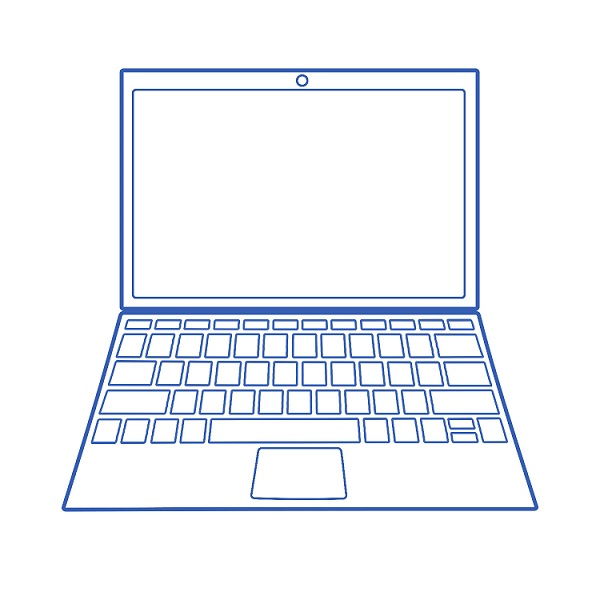
This is the computer science portion of my four-panel website logo. It also serves as the logo for the computer science portion of my website. The laptop design was created in Photoshop using simple shapes and transforms to create perspective. This version of the logo was created in July 2020 as part of my capstone for the Web Design for Everybody course series, during which I created the original version of this website.
3 / 15
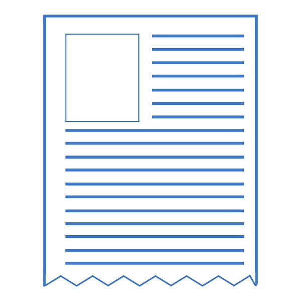
This is the design portion of my four-panel website logo, which also serves as the logo for the design portion of my website. Intended to evoke page layout, it was created using shape tools in Photoshop. This version of the logo was created in July 2020 as part of my capstone for the Web Design for Everybody course series, during which I created the original version of this website.
4 / 15
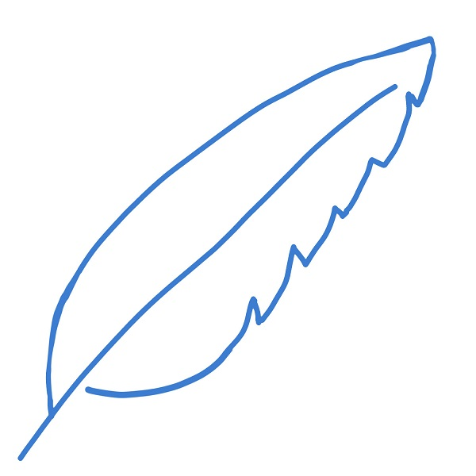
This is the writing portion of my four-panel website logo, which also serves as the logo for the writing portion of my website. It was made using paintbrush tools in Photoshop. This logo was created in July 2020 as part of my capstone for the Web Design for Everybody course series, during which I created the original version of this website.
5 / 15
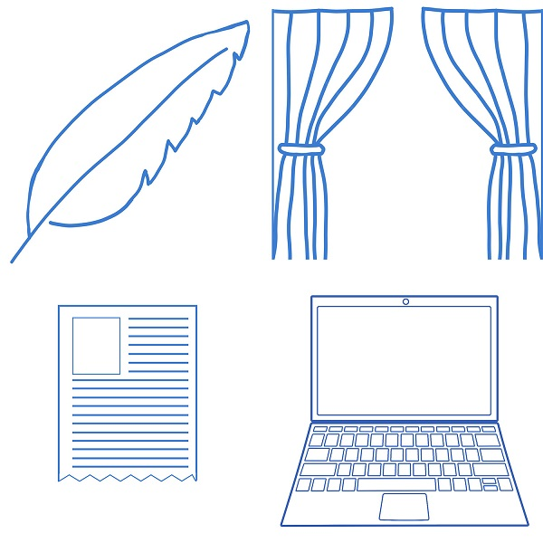
This is the four-panel logo for my website, intended to indicate my several areas of expertise. It was made in Photoshop by conglomerating each of the section logos. It was created in July 2020 as part of my capstone for the Web Design for Everybody course series, during which I created the original version of this website.
6 / 15
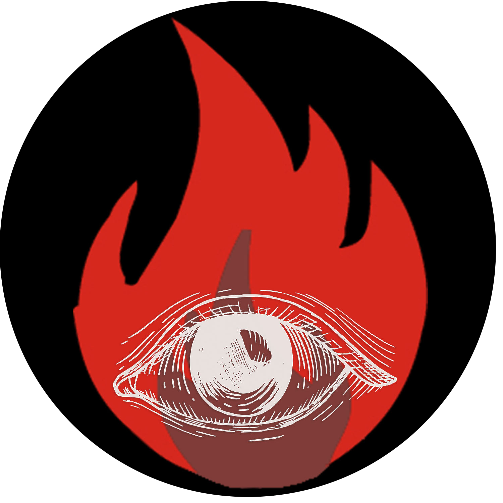
This logo was created for a project in my False Documents class to represent a necromantic cult fixated on the resurrection of people close to the members. I conglomerated it in Photoshop using stock images of an eye to represent intellectual enlightenment and a flame to represent physical brightness in the dark. It was created in November 2019.
7 / 15
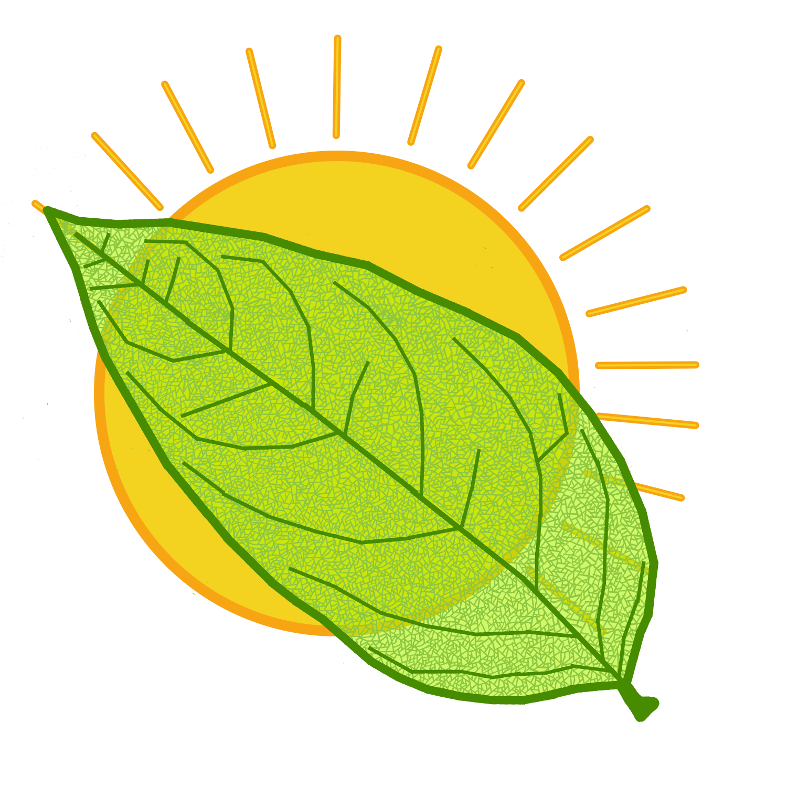
This logo was created for the same False Documents project as the previous one. It was created for an organization the opposes necromancy and supports natural cycles of decomposition and rebirth. I drew both the leaf and the sun using Photoshop tools and a stylus. The leaf represents the type of natural life supported by the organization, and the sun represents natural brightness in opposition to the man-made brightness of captive fire. It was created in November 2019.
8 / 15
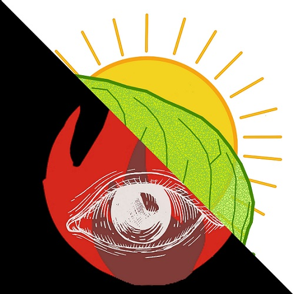
This logo was created for the same False Documents project as the previous two. I conglomerated it in Photoshop as a representation of the conflict between the two factions and the logo for its organizational groupchat. It was created in November 2019.
9 / 15
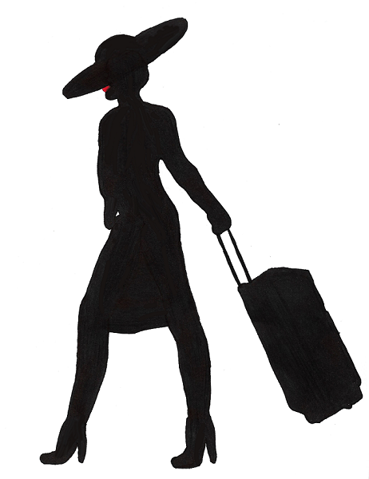
This is the basic logo used in a line of Anna branded prop products for a performance of Kurt Weill's The Seven Deadly Sins. I originally drew this image by hand, tracing and modifying several versions over different pages. When I reached the version I wanted to use, I scanned it and used Photoshop to digitally recreate the shape and fine-tune the color placement. It is the basic image employed in the following images and several of the product labels shown below. It was created in 2018.
10 / 15
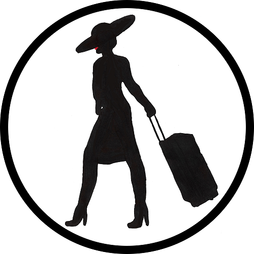
This is the second version of the Anna logo that I made. I was instructed to make a logo of the type that would be on upscale mass-market department store brand. I made this simplistic medallion-style logo as a version that could be resized and put onto any product to identify it with the brand. It was created in 2018.
11 / 15
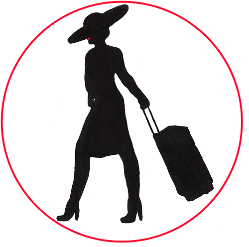
I quickly realized that the black outline version of the medallion-style logo would not work well on dark backgrounds, so I made this alternative version with a red outline. Created in 2018.
12 / 15
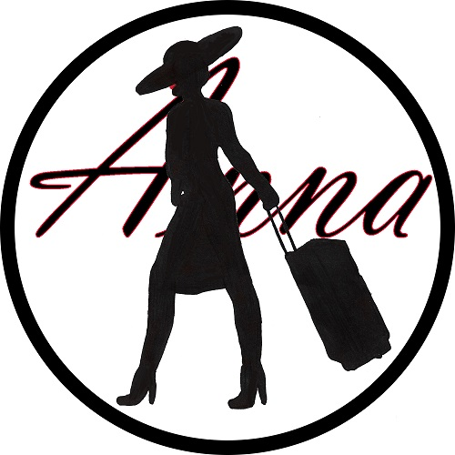
I made this version of the Anna logo against the possibility that it would not be recognizable otherwise. In the end, it was not used for the production. Created in 2018.
13 / 15
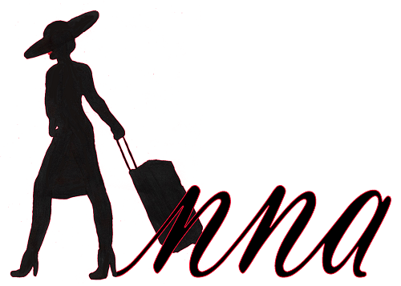
I made this version of the Anna logo for the promotional poster that we used at the end of the opera. It was used alongside an image of the performer who was playing Anna 1 for the night. Created in 2018.
14 / 15
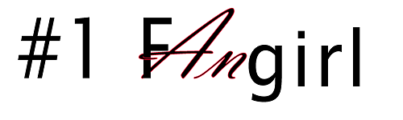
This image was part of a concept for a t-shirt to be worn by fans of Anna, who at one point process through the audience with Anna products. The decision was eventually made to not to include the shirts or the logo in the production. Created in 2018.
15 / 15
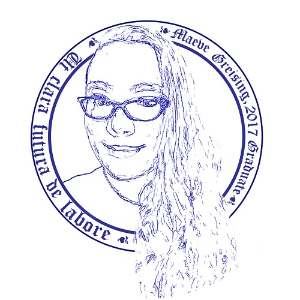
I made this logo to commemorate my high school graduation. It was made using native Photoshop tools. A cropped version was used as a confectionery photo transfer. Created in 2017.
❮
❯
1 / 25
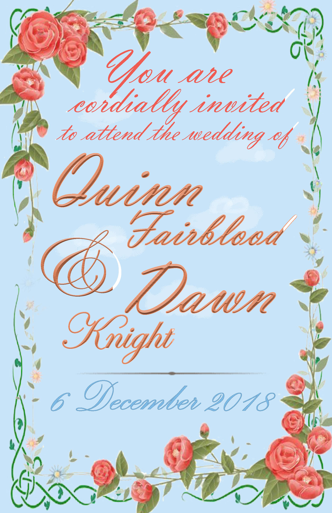
I made this invitation for a mock wedding I was organizing for a pair of characters created by my friend. It was made in Photoshop using built-in fonts and royalty-free images. Created in December 2018.
2 / 25
![A page-sized image, scaled down. In its center, there is a feminine person with wavy blond hair. They are wearing a sparkly black dress with white lacework an open back, which is turned towards the camera. They are looking over their shoulder with a coy smile. Above them is the word 'Lady' in large script letters. Around them are several sans-serif headlines. They read, 'Hot Tips: love, fashion, money, diet & more!'; 'Love advice from your favorite celebs!'; 'Anna on love, life, and making it as a woman'; 'Our favorite recipies for little indulgences'; 'learning to love your body one selfie at a time!'; 'the 16 new fad diets you SHOULDN'T try--and 5 you should!'; and 'Winter style: scarves, cowls, and shawls, oh my!'](imgs/rachel-mag-cover.jpg)
I created this magazine cover for a production of Kurt Weill's "The Seven Deadly Sins". It served as the cover image for a prop magazine used to indicate the growing fame of Anna 1. I took the photo used in the cover and edited and compiled it in Photoshop. Created in 2018.
3 / 25
![An announcement card. It has a dark grey background and a gold border graphic. Inside, there are two pictures of a young woman. One shows her in a navy blue and white dress and glasses, witting on some grass and smiling. The other shows her standing with her eyes closed playing a violin in front of a dark grey background. The text between the photos reads: 'Class of 2017: Maeve Greising's senior recital and graduation party will take place on July 22, 2017 at Urbandale United Church of Christ. The recital will begin at 3:00 pm. The graduation party and reception will immediately follow, about 4:00 pm.' An RSVP email and phone number are also listed.](imgs/grad-announcement-front.jpg)
This is the front of my graduation announcement, which I laid out myself. The images used were taken by Dodgen Photography as my official senior photos. I wrote the text of the announcement and laid it out in Photoshop, as I did not have access to InDesign at the time. Created in 2017. Page 1 of 2.
4 / 25
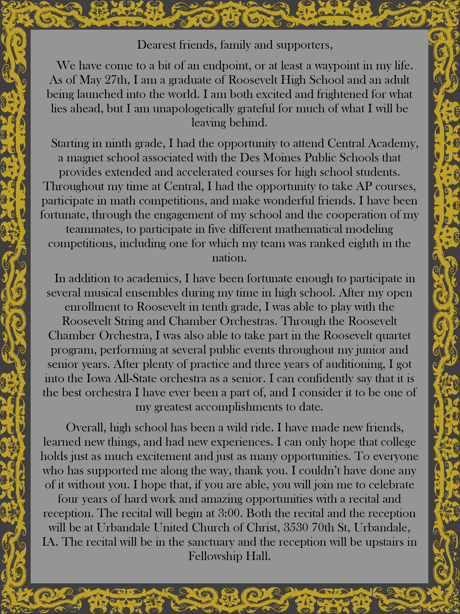
The backside of the same graduation announcement. Created in 2017. Page 2 of 2.
5 / 25
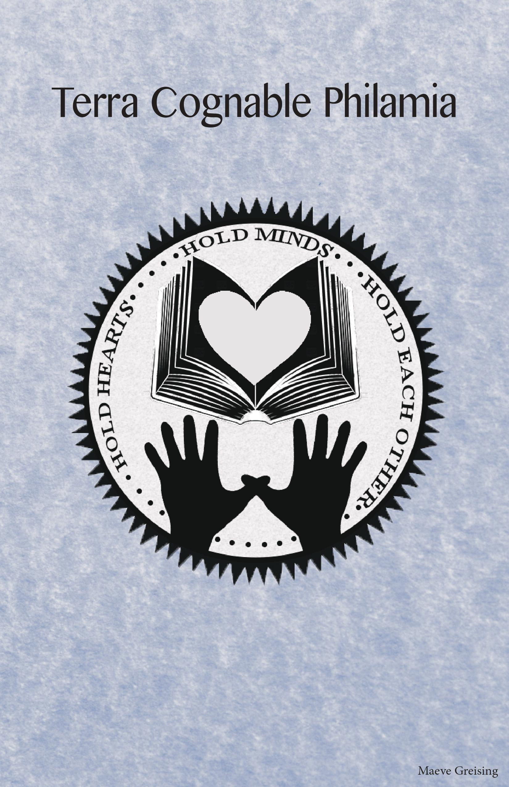
This is the cover page of a pamphlet that I created for a class project. The assignment was to design a utopia and create a pamphlet explaining it. This page includes a logo created in Photoshop using royalty-free stock images, a background created by editing a royalty-free parchment texture. I did the layout in InDesign. Created in 2016. Page 1 of 10.
6 / 25
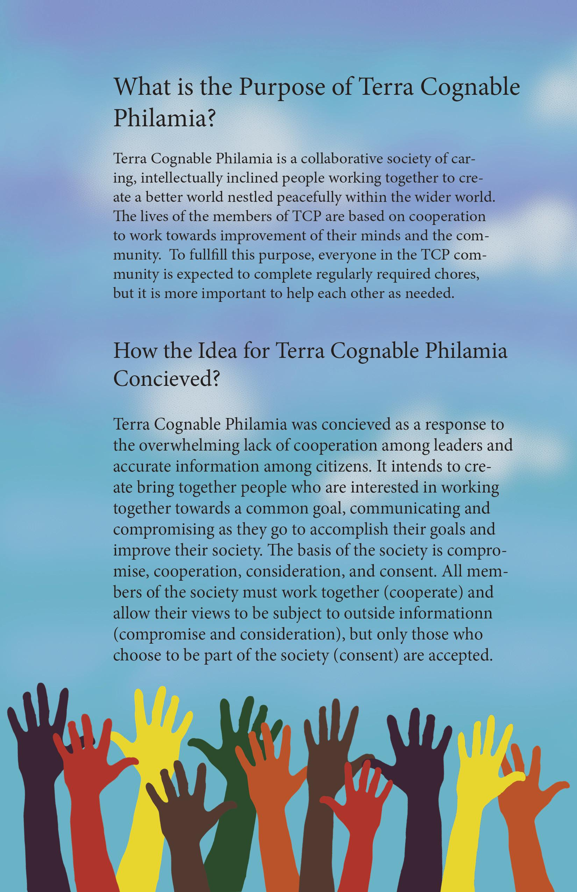
Another page from the utopia pamphlet. This page includes a digitally painted background created in Photoshop. The hands are edited from royalty-free silhouette images. The hand positions here are the mirror image of those on the following page. Layout done in InDesign. Created in 2016. Page 2 of 10.
7 / 25
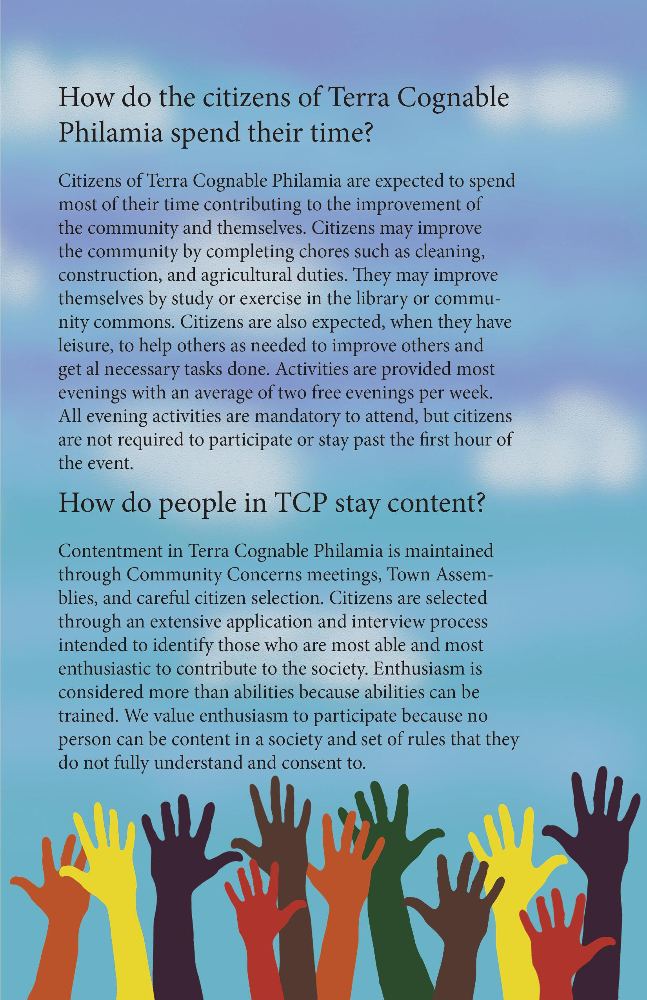
Another page from the utopia pamphlet. This page includes a digitally painted background created in Photoshop. The hands are edited from royalty-free silhouette images. The hand positions are the mirror image of those on the previous page. Layout done in InDesign. Created in 2016. Page 3 of 10.
8 / 25
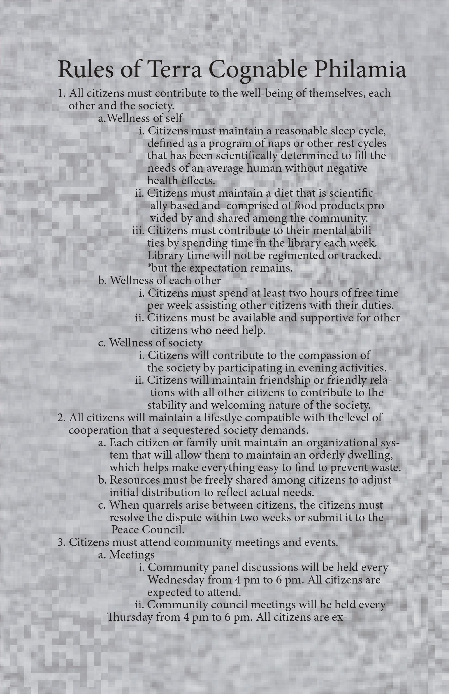
Another page from the utopia pamphlet. This page includes a background edited in photoshop from a randomly generated bitmap. Layout done in InDesign. Created in 2016. Page 4 of 10.
9 / 25
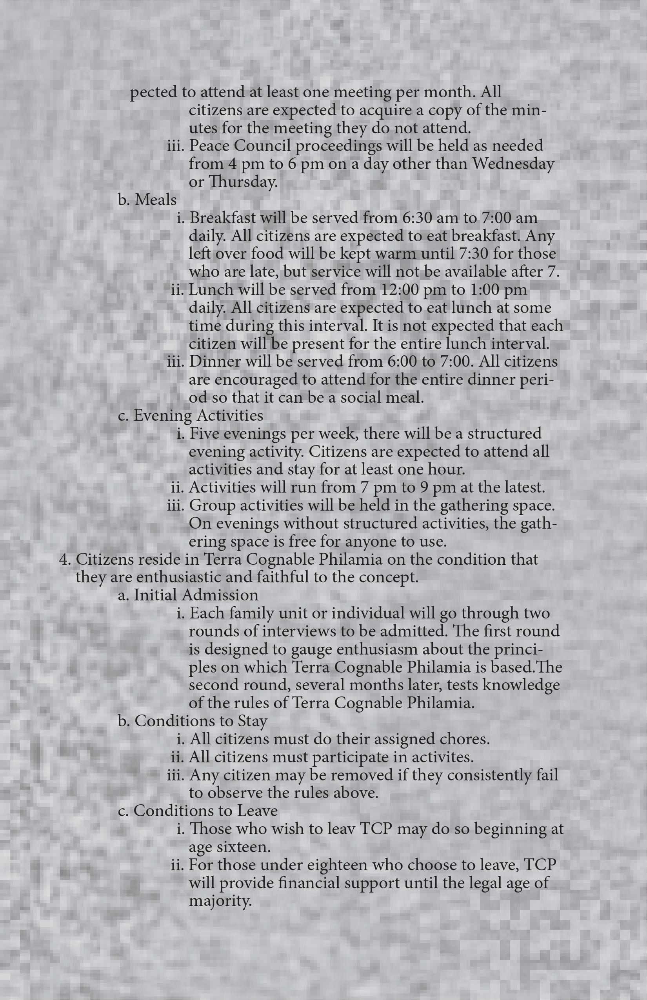
Another page from the utopia pamphlet. This page includes a background edited in Photoshop from a randomly generated bitmap. Layout done in InDesign. Created in 2016. Page 5 of 10.
10/ 25
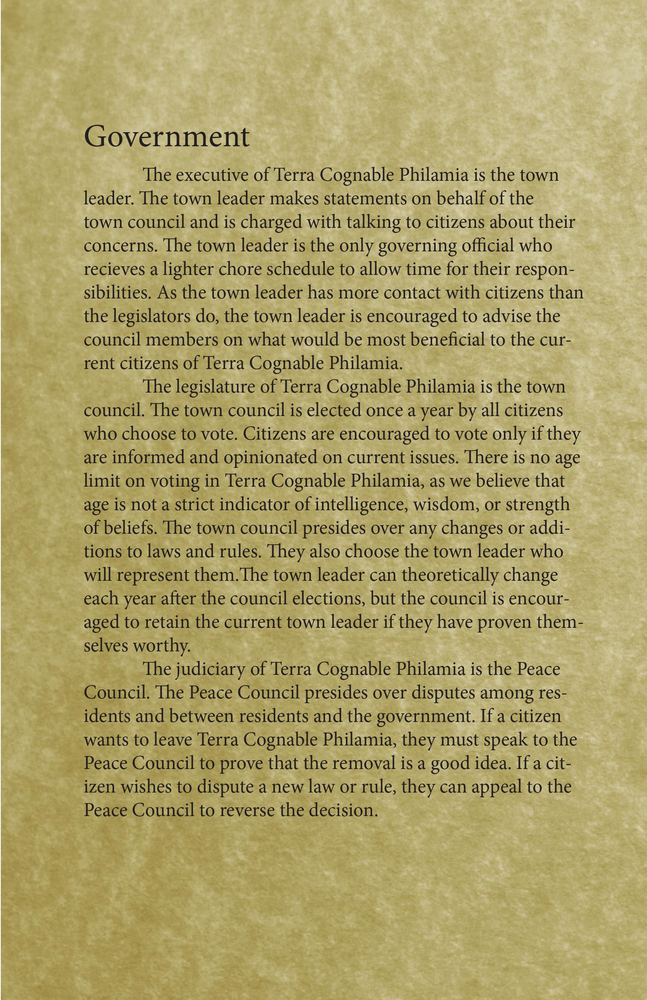
Another page from the utopia pamphlet. This page includes a background edited in Photoshop from a stock texture image. Layout done in InDesign. Created in 2016. Page 6 of 10.
11 / 25
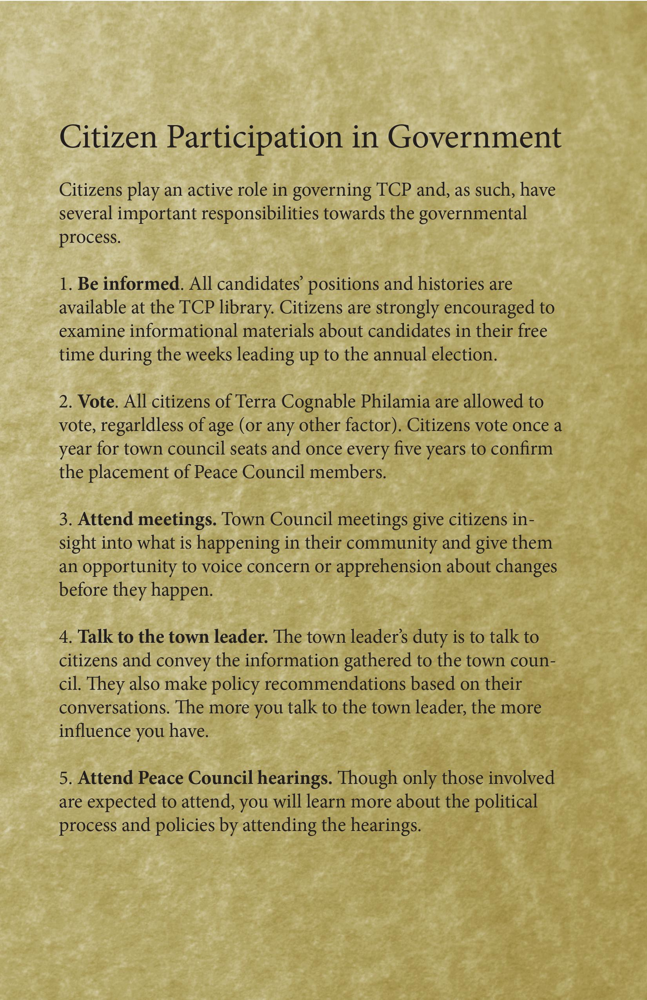
Another page from the utopia pamphlet. This page includes a background edited in Photoshop from a stock texture image. Layout done in InDesign. Created in 2016. Page 7 of 10.
12 / 25
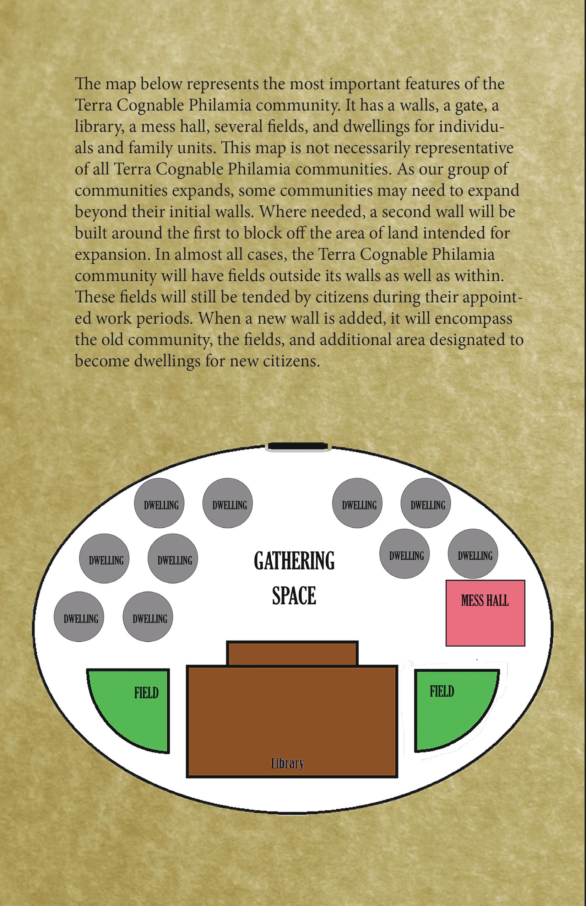
Another page from the utopia pamphlet. This page includes a background edited in Photoshop from a stock texture image and an original digital diagram. Layout done in InDesign. Created in 2016. Page 8 of 10.
13 / 25
![A half-page from a pamphlet. It has a yellow-toned parchment background, a diagram, and a section of black text. The diagram is a circle structured like a wagon wheel. The innermost portion of it is a yellow circle labeled 'kitchen'. Around the kitchen, there is an unlabelled grey ring. Around it, there is a green ring that is divided into several sections. They are labeled, clockwise from the top, 'communal office/workroom', 'bedroom', 'bedroom', 'entrance', 'bedroom', and 'bedroom'. The full text of this page is available on the writing section of the website.](imgs/TCP/0009.jpg)
Another page from the utopia pamphlet. This page features a background edited in Photoshop from a stock texture image and an original digital diagram. Layout done in InDesign. Created in 2016. Page 9 of 10.
14 / 25
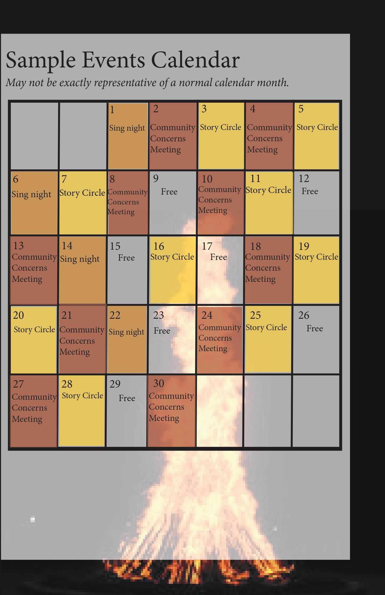
Another page from the utopia pamphlet. This page features a background edited from a stock image and an original calendar. Layout done in InDesign. Created in 2016. Page 10 of 10.
15 / 25
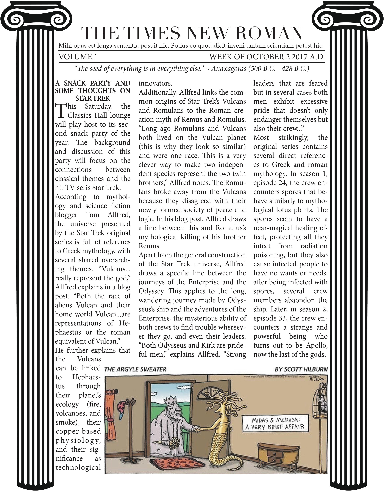
The front side of the Times New Roman, a community newsletter that I produced whlie living on Oberlin College's Classics theme hall. Decorative images are royalty-free stock images edited to size in Photoshop. Layout done in InDesign. Created in 2018. Page 1 of 2.
16 / 25
![A page of a newsletter. It has a crossword puzzle and a cartoon. The puzzle is entitled 'Godly Goings-On, Part 1.' The cartoon represents a bar with several figures from Greek mythology interacting in a bar. In the background, Zeus throws lightning bolts at a dart board. In the foreground, Poseidon sits in front of a bowl of peanuts, drinking fom a mug and holding a trident with a fish impaled on it. Medusa sits next to him in a red robe, holding a martini glass. Next is Hermes, who is wearing his winged helmet and drinking from a mug. Sitting next to Hermes is a shirtless male hunter with a quiver with several arrows. Another arrow sits on the bar by his elbow. He appears to be speaking to Athena, who is drinking from a glass that appears to be full of milk.](imgs/TNR-2.jpg)
The back side of the Times New Roman, a community newsletter that I produced while living on Oberlin College's Classics theme hall. Decorative images are royalty-free stock images edited to size in Photoshop. Layout done in InDesign. Created in 2018. Page 2 of 2.
17 / 25
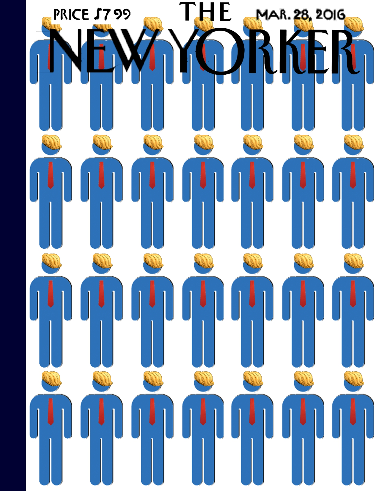
This is the cover of a fake issue of the New Yorker that I produced for an English class. This layout was done in Photoshop and Indesign using built-in tools and royalty-free assets. Created in 2016. Page 1 of 4.
18 / 25
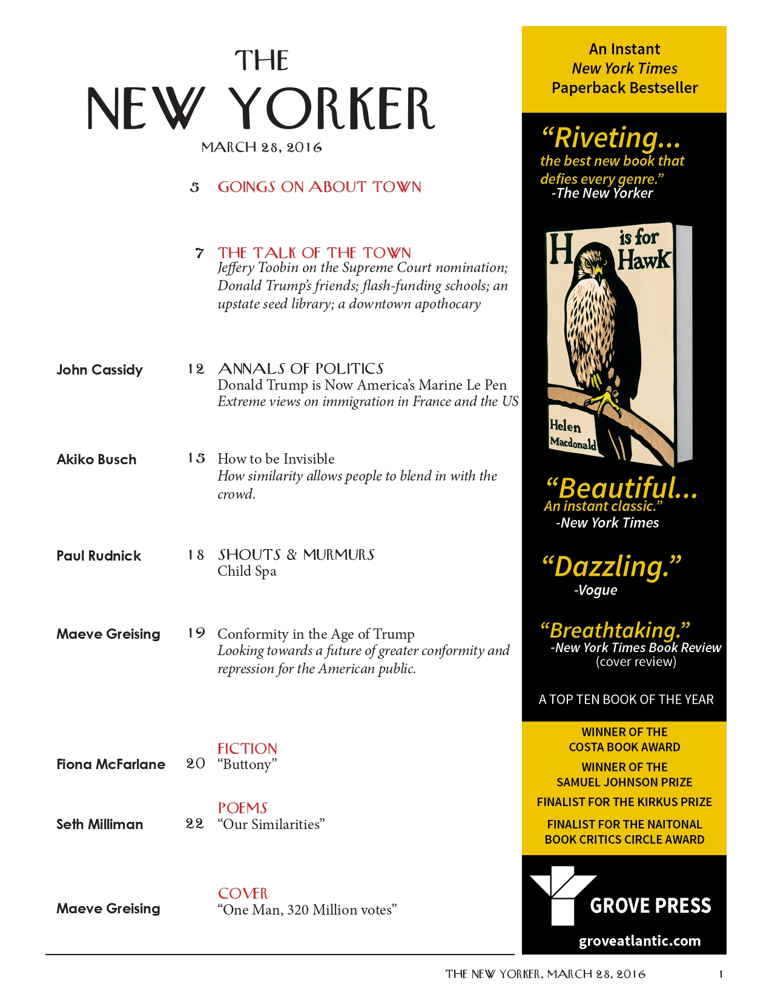
This is a page from the table of contents of the fake New Yorker. It includes a sidebar advertisement that I recreated from scratch using logos and promotional images available online. I recreated the New Yorker's table of contents by hand using InDesign and a free font that closely imitates that used in the New Yorker. Created in 2016. Page 2 of 4.
19 / 25
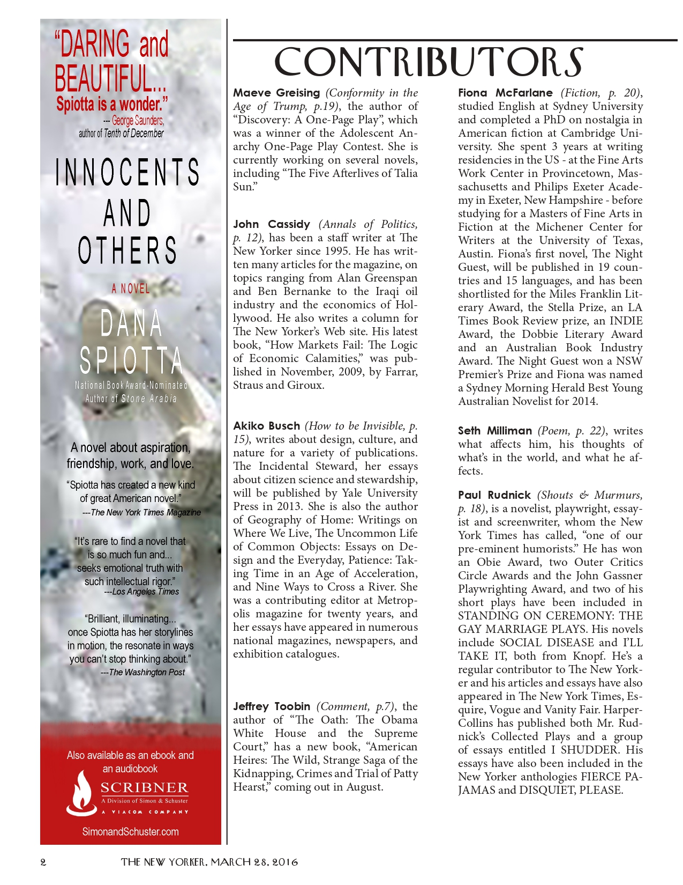
This is the contributor page from the fake New Yorker. It includes a sidebar advertisement that I recreated from scratch using logos and promotional images available online. Created in 2016. Page 3 of 4.
20 / 25
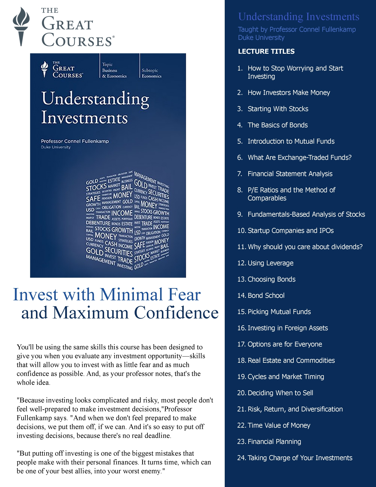
This is an advertisement from the fake New Yorker. I created its layout from scratch using real Great Courses advertisements as a guide. Created in 2016. Page 4 of 4.
21 / 25
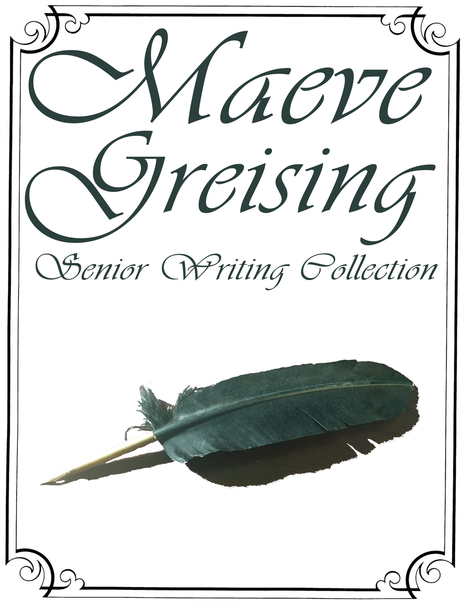
This is the cover image for my high school senior writing collection, which includes a royalty-free border and an original photograph edited to be transparent except for its shadow. Created in 2017.
22 / 25
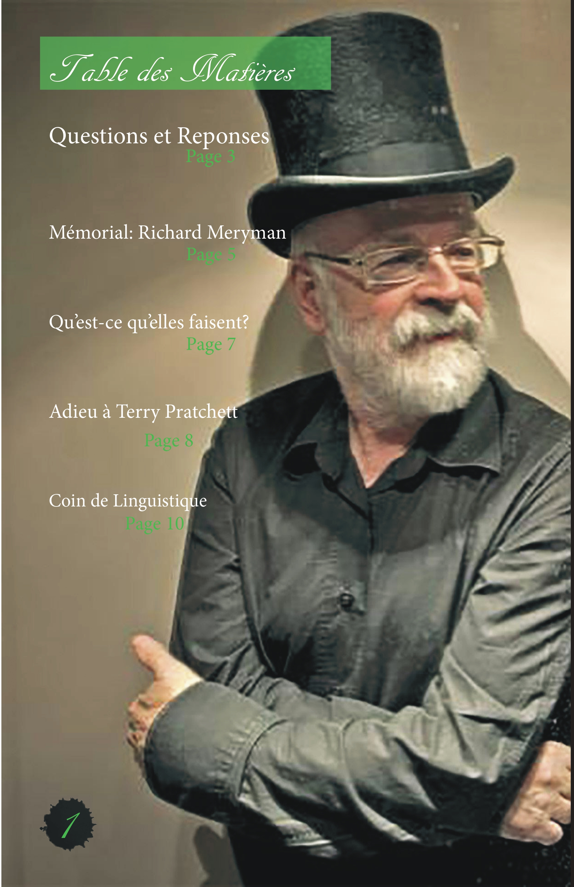
This is the table of contents for a writing-themed magazine that I made for a high school French class. It was laid out in InDesign with publicly available assets. The page number inkblot was extracted in Photoshop from a royalty-free inksplatter image. Created in 2015. Page 1 of 4.
23 / 25
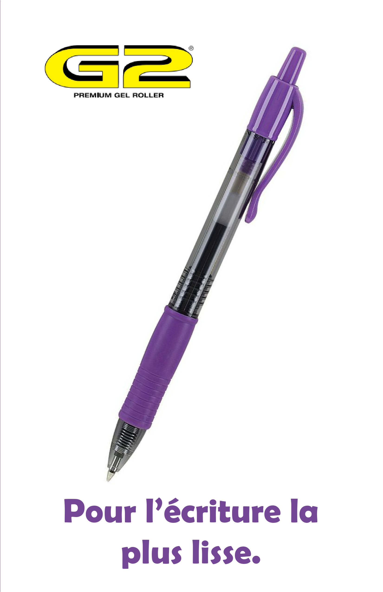
This is an advertisement from a writing-themed magazine that I made for a high school French class. It was created in Photoshop using publicly available images of the pen and the G2 logo. Created in 2015. Page 2 of 4.
24 / 25
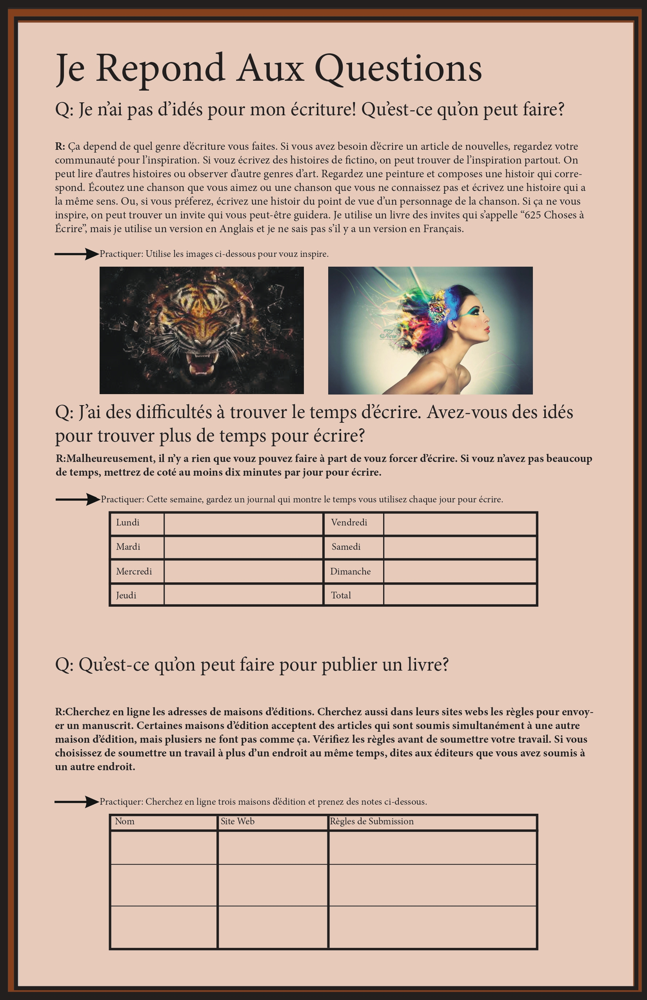
This is a Q&A page that I laid out for a writing-themed magazine for a high school French class. It was laid out in InDesign using publically available images. Created in 2015. Page 3 of 4.
25 / 25
![A full-page advertisement for Coursera. The first line reads, 'Apprenez n'importe chose...' superimposed over pictures of mountains, a stock image of a meeting, some computer code, and a building. The second line reads, 'N'importe quand...' superimposed over images of women and girls with laptops outside, in an office, and in bed. The third line reads, 'N'importe ou.' It is superimposed over images of a beach, the Great Wall of China, and the Sphinx. The final line has the Coursera logo and the phrase, 'Cours des universites fameuses. Gratuits.' It is superimposed over a collage of university logos.](imgs/french-writing-mag/p12.jpg)
This is an advertisement that I designed to fill out the pages for my writing-themed magazine for my high school French class. I created several of the component images in Photoshop from publically available images. The layout was done in InDesign. Made in 2015. Page 4 of 4.
❮
❯
1 / 7
![A poster that reads, 'Live glamorous - Live Anna'. The 'A' in 'Anna' is formed by the legs of a woman's silhouette. She is wearing a wide-brimmed hat tilted over her eyes and a knee-length dress. She is rolling a suitcase behind her. Her lips are red and there is a red outline around the silhouette and the name 'Anna'. The words 'live glamorous - live' are in a red script font. Next to them, there is a picture of a person in a sparkly black dress with white lacework. They are looking over their shoulder with a coy smile.](imgs/rachel-poster.jpg)
This is a poster that I created for a production of Kurt Weill's "The Seven Deadly Sins". It was used in the final scene of the opera to represent the triumphant fame of Anna 1. It was created in Photoshop using an original photo and original graphics. Created in 2017.
2 / 7
![A label for a product that reads, 'Anna's Perfect Lawn.' The right panel has a list of ingredients that reads 'includes: grass, greener grass'. Below it, there is a medallion-style Anna logo. The left panel reads, 'Anna industries, Inc. was founded in 2016 by Anna with the guidance of her sister, Anna. Our mission is to offer opulent products of all types to get-up-and-go young women who are living bold, active lives. Here at Anna Industries, we know that it's hard to forge ahead in the world, but we hope to offer products that give women the resources and drive to accomplish their dremas. We strive to blaze a new path for women in media by promoting a [sic] overwhelmingly positive image of glamor.' The words 'Anna's Perfect Lawn' are in special fonts that look like plants. There are cartoon blades of grass along the bottom of the labels.](imgs/envy-label.jpg)
This is one of six labels that I made for a production of Kurt Weill's "The Seven Deadly Sins". It was used in a scene presenting the profitability of Anna 1's personal brand. It was made in Photoshop using royalty-free fonts and assets. Created in 2017.
3 / 7
![A label for a product. Its center panel reads, 'Anna's Premium Diet Shake'. Above it, there iw a medallion-style Anna logo. Along the bottom, there is a red tape measure. On the top, there is a swooping gradient section that runs from pink to red. On the right panel, there is an ingredients list that reads, 'Ingredients: calimari, doritos (cool american), mountain dew (code red), socaine, brandy, ascorbic acid, glycol-ether, mineral water, sucrose, wood glue, cedar products (bark, wood chips), eastern fire ants, tears. Contains less than 1% of: glucomannan, garcinia.' The left panel reads: 'Anna industries, Inc. was founded in 2016 by Anna with the guidance of her sister, Anna. Our mission is to offer opulent products of all types to get-up-and-go young women who are living bold, active lives. Here at Anna Industries, we know that it's hard to forge ahead in the world, but we hope to offer products that give women the resources and drive to accomplish their dreams. We strive to blaze a new path for women in media by promoting a [sic] overwhelmingly positive image of glamor.'](imgs/gluttony-label.jpg)
This is one of six labels that I made for a production of Kurt Weill's "The Seven Deadly Sins". It was used in a scene presenting the profitability of Anna 1's personal brand. Created in 2017.
4 / 7
![A label for a product. Its center panel reads, 'Anna's Love Potion: Pheremone Perfume'. There is a large pink heart behind the phrase 'Anna's Love Potion'. The background is red with small hearts of various shades of red and white. The right panel has an ingredients list that reads, 'Ingredients: ylang ylang essential oils, jasmine essential oils, extract and essence of vanilla, acetoin, artificial aroma, benzyl alcohol, benzylacetone, adrostadienone, andostenol, estratentranol.' Beneath it, there is a medallion-style Anna logo with a red outline. The left panel reads, 'Anna industries, Inc. was founded in 2016 by Anna with the guidance of her sister, Anna. Our missio nis to offer opulent products of all types to get-up-and-go young women who are living bold, active lives. Here at Anna Industries, we know that it's hard to forge ahead in the world, but we hope to offer products that give women the resources and drive to accomplish their dreams. We strive to blaze a new path for women in media by promoting a [sic] overwhelmingly positive image of glamor.'](imgs/lust-label.jpg)
This is one of six labels that I made for a production of Kurt Weill's "The Seven Deadly Sins". It was used in a scene presenting the profitability of Anna 1's personal brand. Created in 2017.
5 / 7
![A label for a product. Its center panel reads, 'Anna's Perfect Preservative'. Between the lines of text, there is a medallion-style Anna logo. The top of the right panel reads, 'Stay this perfect forever!' in black script text. The bottom has an ingredients list that reads, 'ingredients: bht, optiphen, butylparaben, anisic acid, imadozolidinyl urea, sodium nitrate, methyl paraben, sulfur dioxide, sodium benzoat, bha, germaben II, diazolidinyl urea, kathon, levulinic acid.' The left panel reads, 'Anna industries, Inc. was founded in 2016 by Anna with the guidance of her sister, Anna. Our mission is to offer opulent products of all types to get-up-and-goyoung women who are living bold, active lives. Here at Anna industries, we know that it's hard to forge ahead in the world, but we hope to offer products that give women the resources and drive to accomplish their dreams. We strive to blaze a new path for women in media by promoting a [sic] overwhelmingly positive image of glamor.' The top of the label has three partial-opacity swooshing shapes that overlap each other.](imgs/pride-label.jpg)
This is one of six labels that I made for a production of Kurt Weill's "The Seven Deadly Sins". It was used in a scene presenting the profitability of Anna 1's personal brand. Created in 2017.
6 / 7
![A product label. The center panel has a graphic of a yellow lightning bolt and the words, 'Sloth no more: Premium Energy Drink'. The right panel has an ingredients list above a medallion-style Anna logo with a red outline. The ingredients list reads, 'ingredients: dexedrine, dexedine, coca, caffeine, yerba mate, gurana, cocoa, green coffee bean extract, coffee beans (ground), garcinia cambogia'. The left panel reads, 'Anna industries, Inc. was founded in 2016 by Anna with the guidance of her sister, Anna. Our mission is to offer opulent products of all types to get-up-and-goyoung women who are living bold, active lives. Here at Anna Industries, we know that it's hard to forge ahead in the world, but we hope to offer products that give women the resources and drive to accomplish their dreams. We strive to blaze a new path for wome in media by promoting a [sic] overwhelmingly positive image of glamor.' The label has a black background with acid yellow to pand bottom edges that fade into the background.](imgs/sloth-label.jpg)
This is one of six labels that I made for a production of Kurt Weill's "The Seven Deadly Sins". It was used in a scene presenting the profitability of Anna 1's personal brand. Created in 2017.
7 / 7
![A product label. Its center panel reads, 'Sparkles for your enemies: extra sticky glitter for extra icky people' in red text. The right panel reads, 'ingredients: glitter (plastic), ethyl-2-cyanoacrylate'. Beneath it, there is a medallion-style Anna logo with a red outline. The left panel reads, 'Anna Industries, Inc. was founded in 2016 by Anna with the guidance of her sister, Anna. Our mission is to offer opulent products of all types to get-up-and-go young women who are living bold, active lives. Here at Anna Industries, we know that it's hard to forge ahead in the world, but we hope to offer products that give women the resources and drive to accomplish their dreams. We strive to blaze a new path for women in media by promoting a [sic] overwhelmingly positive image of glamor.' The background is an image of flecks of glitter on a black field.](imgs/wrath-label.jpg)
This is one of six labels that I made for a production of Kurt Weill's "The Seven Deadly Sins". It was used in a scene presenting the profitability of Anna 1's personal brand. Created in 2017.
❮
❯